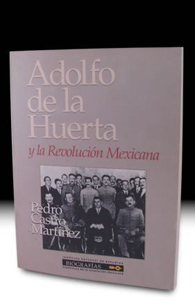

- Inicio
- Publicaciones
- Álvaro Obregón fuego y cenizas de la Revolución Mexicana
- Adolfo de la Huerta El desconocido de Roberto Guzmán Esparza
- A la Sombra de un Caudillovida y muerte del general Francisco R. Serrano
- Soto y Gamagenio y figura
- Adolfo de la Huerta Serie Grandes Protagonistas de la Historia Mexicana
- Historia del Agrarismo en México
- Ciudad Cuauhtémoc, Chihuahuacrónica de su fundación
- Adolfo de la Huerta: la integridad como arma de la revolución
- Adolfo de la Huerta y la Revolución Mexicana
- Fronteras Abiertasgeopolítica y expansionismo en Brasil contemporáneo
- Currículum

ISBN: 968-805-697-9
ISBN: 978-607-455-257-7 (CNCA)
Editorial: Instituto Nacional de Estudios Históricos de la Revolución Mexicana-Universidad Autónoma Metropolitana Iztapalapa. 1992, 170 pp.
Adolfo de la Huerta
y la Revolución Mexicana
Pedro Castro Martínez da a conocer el resultado de varios años de investigación, Adolfo de la Huerta y la Revolución Mexicana, obra acreedora de Mención Honorífica en el Premio Salvador Azuela 1990, otorgada por el Instituto Nacional de Estudios Históricos de la Revolución Mexicana (INEHRM). El autor, interesado en la vida y obra de Adolfo de la Huerta, rescata aspectos trascendentales de su participación en el movimiento armado y en la política de principios de siglo.
De la Huerta, ligado estrechamente con los generales Álvaro Obregón y Plutarco Elías Calles, formó con ellos una poderosa alianza político-militar conocida como el Triángulo Sonorense, que les permitió gobernar al país a la caída del régimen de Venustiano Carranza. A pesar de haber sido presidente interino de la República a mediados de 1920, De la Huerta siempre fue considerado “como una especie de socio menor de la alianza norteña”, en la que sin lugar a dudas destacaron las recias personalidades de Obregón y Calles, razón por la que quizás su biografía no ha sido estudiada con la misma profundidad que las de sus famosos paisanos. En este sentido, Pedro Castro busca ofrecer al lector el claroscuro del proceder de este revolucionario sonorense.
La lucha por el poder entre ellos condujo a Adolfo de la Huerta a sublevarse a fines de 1923, rebelión que alcanzó su máxima expresión al siguiente año, pues el presidente Álvaro Obregón había designado como su sucesor a Plutarco Elías Calles. Derrotado, De la Huerta partió rumbo a un largo exilio en los Estados Unidos de América, donde trabajaría como maestro de bel canto y se mantendría alejado de las actividades políticas. Regresó a México durante el periodo presidencial del general Manuel Ávila Camacho. Este libro precedió a Adolfo de la Huerta: la integridad como arma de la revolución.
Réplicas y consultas con el autor: pedrocastro3131@gmail.com
Índice
Prólogo
- El camino del poder
- Gobernador rebelde, presidente conciliador
- El rompimiento del Triángulo Sonorense
- Una rebelión sin cabeza
- Once años de exilio y silencio
- Apéndice documental
- Bibliografía
Revolución Mexicana, Adolfo de la Huerta, Plutarco Elías Calles, Álvaro Obregón, Jorge Prieto Laurens, Eugenio Martínez, Clara Oriol, Plan de Agua Prieta de 1920, Rebelión Delahuertista de 1923-24, Francisco Villa, Partido Cooperatista Nacional, Elecciones en 1924 en México